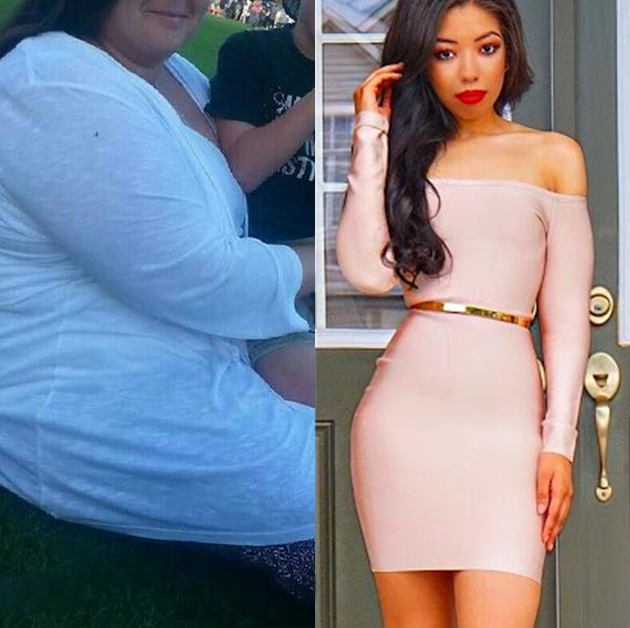

¡Increíble pérdida de peso! ¡60 kilos menos en solo 3 meses! Experiencia personal...
En apenas unos meses, lo que antes parecía imposible se convirtió en realidad. Pesaba casi 125 kg y perdí exactamente la mitad para sobrevivir.
El comienzo del final
Me llamo Amalia, tengo 32 años y todas las mujeres deberían leer mi historia.
Nunca en mi vida he estado delgada. Yo sufro exceso de peso desde que era una muchacha.
Sin embargo, eso no me impedía llevar una vida normal y pasármelo bien. Probé un montón de dietas y ejercicios físicos, fui al gimnasio a intentar perder de peso. Pero todo fue en vano, porque nunca tenía fuerza de voluntad ni ganas. Y enseguida recuperaba esos 2 o 3 kilos que había perdido.
Como le pasa a otras muchachas con talla grande, yo tenía una autoestima bastante baja. Me avergonzaba de mi propio cuerpo, no sabía si era atractiva o no, y apenas tenía contacto con hombres. Sin embargo, esto no impidió que me casara y fuera una mujer feliz. Aunque la verdad es que esa felicidad no duró mucho.
Mis kilogramas de más y mis innumerables intentos de perder peso estaban volviendo loco a mi marido. Se convirtió literalmente en un monstruo: me gritaba mucho, me llamaba foca, estaba enfadado e incluso me requisaba la comida. ¡Al final, mi esposo empezó a maltratarme!
Al final de un año de matrimonio, mi marido había cambiado mucho. Al principio me soltaba indirectas, pero luego empezó a decirme abiertamente que perdiera peso. Me comparaba con otras mujeres para decirme que ya no le excitaba. Me llamaba "gorda espantapájaros", me amenazaba con dejarme y buscarse otra mujer.
Estaba enamorada de mi marido y tenía miedo de perderlo, así que estuve buscando como una loca cualquier oportunidad para perder peso. Estaba siempre intentando distintas dietas, me apunté a un gimnasio, e incluso fui a un nutricionista. Estaba muy involucrada.
Lo peor es que todos mis esfuerzos no valieron para nada. Ya no seguía bajando de peso. ¡Lo máximo que conseguí perder fueron 5 kilogramas! Mi marido no podía entender lo complicado que era y el esfuerzo que se necesitaba. No me apoyaba para nada, en vez de eso, me humillaba una y otra vez. Cuando terminaba otra dieta, me quitaba toda la comida de en medio. Se había convertido en un verdadero monstruo, poseído por la ira y la agresividad. Mi cuerpo se volvió repugnante para él.
Nuestra vida se convirtió en una pesadilla, estaba totalmente hecha polvo y no sabía cómo salir de esta situación. Tenía miedo de quedarme sola, nadie quiere a una muchacha gorda. Bueno, no sabía que lo peor aún estaba por venir. Después de otra pelea, me pegó tan fuerte que perdí el conocimiento y entonces me desperté en el hospital. Mi marido me dejó y eso fue el final de nuestra vida en familia.
La hora del cambio
Cuando me desperté en el hospital, solo tenía ganas de morirme. Mi vida se derrumbaba y no tenía ni la más remota idea de qué hacer ahora y cómo vivir.
Como parte del tratamiento, tuve que entrar obligatoriamente en el grupo de víctimas anónimas de la violencia de género. Mis padres, al igual que los médicos, me insistían en que fuera, porque yo sola no podía solucionar mis problemas.
Los ejemplos de estas personas me impresionaron. ¡Por primera vez en mucho tiempo, después de todos los contratiempos que había tenido, empecé a creer que tenía una oportunidad de cambiar mi vida y que el exceso de peso no era una sentencia de muerte!
En ese grupo compartíamos nuestras historias y nos contábamos nuestras experiencias unos a otros. Cuando llegó mi turno, les conté todo y me quedé tocada por la reacción de la gente. Nunca en mi vida había oído tantas palabras amables o había visto un apoyo tan grande. Lloraba de alegría y alivio. Y lo más increíble ocurrió cuando una chica me dijo que iba a ayudarme a perder peso:
"- Sé que lo que necesitas es perder peso. ¿Quieres que te ayude?
- ¡Me produce ansiedad hasta la palabra "dieta"! ¡No voy a poder hacerlo!
- No, no te preocupes, no es una dieta. Es un producto de una marca nueva. Sin dietas, sin ejercicio y, sobre todo, sin que te mueras de hambre. Lo único que necesitas es tomar , eso es todo.
- La verdad, me cuesta creerlo. Ya he probado tantas cosas que no estoy segura...
- Entiendo que no parece real, sobre todo después de haber pasado por tantos tratamientos. Pero créeme, no te recomendaría nada de lo que no estuviera segura. Mi madre perdió peso con . ¡17 kg menos en 3 semanas! Imagínatelo. Es un resultado estupendo y, lo mejor de todo, apenas le costó trabajo. No tenía ninguna restricción, ella seguía con su vida normal y comía todo lo que quería.
- ¡Suena muy tentador!
- ¡Pruébalo, no pierdes nada!"
Repetí este diálogo en mi cabeza cientos de miles de veces. Después de analizar la información de internet, leer numerosas opiniones y comentarios (por cierto, me sorprendió saber que muchos famosos lo usan), finalmente, decidí darle a las pastillas efervescentes una oportunidad.
¡Es increíble! ¡ funciona de verdad! Solo tienes que disolverlo en un vaso de agua y tomártelo una vez al día, antes o después del almuerzo. La grasa se quemará. Tu peso corporal disminuirá día a día.
Cómo funciona
es un quemador de grasa exclusivo que elimina todos los residuos de grasa del cuerpo en el menor tiempo posible. Su fórmula natural ofrece una limpieza delicada y no provoca recaídas después de la interrupción del tratamiento.
Lista de los principales ingredientes del producto
- Taurina y Inositol : normalizan el equilibrio hormonal del organismo.
- Ácido pantoténico y extracto de guaraná : son antioxidantes naturales que aceleran el metabolismo, protege el cuerpo de los radicales libres y también aceleran el rejuvenecimiento de la piel.
- Ácido succínico : regula los procesos de metabolismo en el organismo. Fortalece la piel, el pelo y las uñas.
Nueva vida
Era imposible describir con palabras mis primeras emociones después de tomar ¡Un auténtico placer! Después de la primera semana de uso, ya vi los primeros resultados.
Mi vientre se volvió mucho más plano y empecé a sentirme bastante mejor. Podía sentir y moverme de una manera más ligera. Lo más interesante fue que solo tienes que tomarte una vez al día, justo como me decía la chica del grupo. Sin dietas ni problemas de nutrición. Con lo que comía ya no tenía más hambre y al mismo tiempo no ganaba calorías de más, lo que siempre me suponía el mayor quebradero de cabeza. Ya no tenía problemas con eso. Comía como de costumbre, sin ninguna restricción, como hacen todas las personas normales.
¡Finalmente, llegué al objetivo! ¡En solo 3 meses perdí 60 kilos y mi vida había cambiado completamente. Al final conseguí convertirme en la mujer guapa y esbelta que siempre había querido ser.
Cada semana seguía perdiendo más y más peso. En el primer mes, conseguí perder 23 kg. Era un buen resultado, la bajada de peso era notable, pero todo eso no era suficiente.
Veía cómo mi cuerpo se transformaba. Al cabo del siguiente mes, otros 17 kg habían desaparecido. Mi cuerpo estaba más firme, con la piel estirada y sin celulitis. Estos cambios eran evidentes no solo para mí misma, sino también para los demás. La gente empezaba a interesarse por mí e hice nuevos amigos. Gané mucha más seguridad en mí misma. Empecé a querer volver a ponerme vestidos. Quería estar atractiva, sentirme guapa y sensual.
En solo 3 meses perdí 60 kilogramas, es decir, justo la mitad de mi peso. No podía ni imaginarme de que algún día lo podría conseguir. Mi vida ha cambiado radicalmente en estos tres meses. Ahora todos mis miedos y problemas forman parte del pasado. me ha dado el cuerpo con el que siempre he soñado.
He pasado por un camino muy duro, pero gracias al tratamiento adecuado y al apoyo de la gente de mí alrededor, he alcanzado mi objetivo. Sabes que a veces es difícil creer que todo se arreglará y te relajarás. Se que me ha ayudado y estoy segura de que ayudará a más gente. A lo mejor en este mismo momento hay alguien buscando una forma de perder peso de eficacia probada.
¡Es horrible! ¡Hay que castigar a tu marido! ¡Tienes que denunciarlo a la policía! ¡Has hecho bien en no venirte abajo ni abandonar! ¡Buena suerte!
Tu experiencia es impresionante. Gracias por compartir tu método. Yo también tengo serios problemas de peso y quiero pedir las pastillas efervescentes . Espero que a mí también me ayude.
Olivia, ¡claro que debes probarlo! Estoy segura de que te ayudará, como me pasó a mí. Por ese motivo publiqué este comentario en el blog, esperaba que a otras chicas les resultara útil la información y no lo dejaran. Sé cómo todo el mundo lo importante que es tener apoyo. Buena suerte, ¡y no te olvides de contarnos tus resultados!
Sí, ahora es muy popular, lo han anunciado con bombo y platillo. Yo quería pedir más para mí, pero ya no había suficientes. Tuve que esperar a que llegaran nuevas existencias. Bueno, ya he visto los resultados, pero aún sigo esperando que el resto desaparezca. Emma, gracias por tu comentario, y ojalá te cases pronto.
¡Gracias, Flor!
Te entiendo perfectamente... Mi marido me abandonó y me dejó con un niño porque yo tampoco podía perder peso rápidamente después de haber dado a luz a mi hijo :( Intenté perder peso en el gimnasio y poner mi cuerpo en forma, pero todo esto no valió para nada. Mi entrenador personal me recomendó que probara . Es algo estupendo para estimular el metabolismo. ¡Se lo recomiendo a todo el mundo! ¡La grasa se quema al momento!
¡Gracias a Dios, que te libraste de ese hombre, es un auténtico déspota! ¡Buena suerte! ¡Estás en buena forma, eres la envidia de todas!
Mi amiga y yo pedimos las pastillas efervescentes y no podemos esperarnos más a que nos llegue el producto. ¡Estamos deseando empezar!
¡Oh, mi querido ! ¡Lo amo tanto! Hace algunos años, un amigo mío me lo trajo de Europa. No se lo devolví, fue algo genial. Perdí 26 kg con ese producto, y ahora me da hasta miedo acordarme de lo gorda que estaba))) Perdí peso bastante rápido y sin problemas, pero lo más importante, mi peso se mantiene estable todavía.